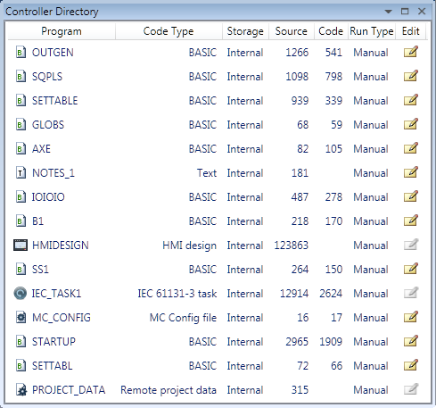

The Directory Viewer shows a more detailed directory view to that available in the " Controller Tree ". The information in the grid is as follows:
|
Column |
Description |
|
Program |
Program name |
|
Type |
Program type |
|
Storage |
Storage location (Normally internal) |
|
Source |
Source code size in bytes |
|
Code |
Object code size in bytes |
|
Run |
Run method: Manual or Auto-run process number |
|
Edit |
Edit the program by clicking on the icon. If the icon is greyed-out then the program is not editable (running programs are not editable and some programs may be locked against editing for other reasons). |
There may be and entry "PROJECT_DATA". This is a file which contains project specific data such as axis names and I/O line descriptions.